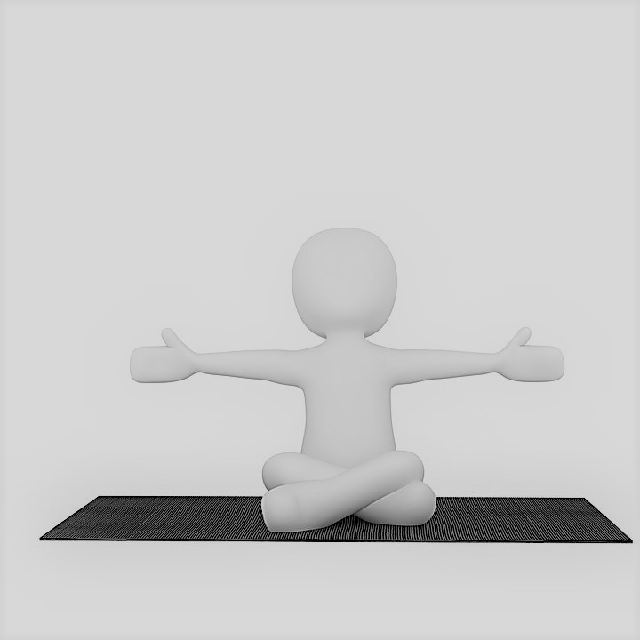

Zájmy
Cestování
Už od mala mám ráda cestování. Jezdíl jak po České republice, tak po Evropě, ale i po světě. Můj největší sen je Island.Příroda
Miluju zvířata, rostliny, prostě celkově přirodu. Ráda se procházím v lese se mými psy. Nebo ráda jezdím na výlety do hor.Malování
Ráda maluji, sice ne tak často, jak bych chtěla, ale přesto to patří mezi mé záliby. Nejčastěji používám akryl.
